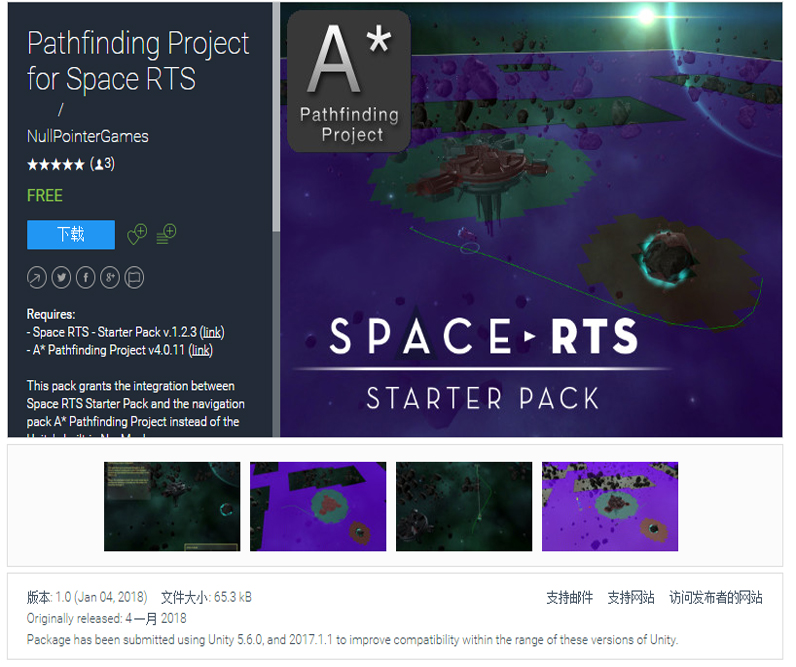

详情页
A* Pathfinding Project插件，可以在Unity3d中实现闪电快速寻路。无论你写一个TD，RTS，FPS或RPG游戏，这个插件都能满足你。有了高度优化的算法和庞大的功能集，但使用起来却很简单，您将能够在短时间内使这些机器人变得更加智能。
下载链接
https://arongranberg.com/astar/download
https://pan.baidu.com/s/1-nUJxwR0GOa9UfN9YuVZ1Q
插件教程
https://blog.csdn.net/q764424567/article/details/80528457